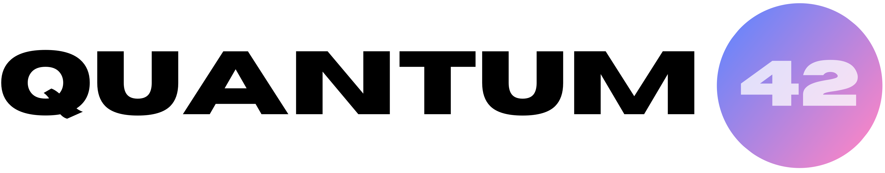

We are a North-India based team participating in the RoboCup Junior Rescue Line league. This team started in 2024 with 4 original members: Raghav, Adhrit, Meher, and Abhiram. In the 2024-2025 season we achived 15th place at India Nationals, 15th place at North-India Regionals, and got "Best Hardware Solution" for the Regional competition.